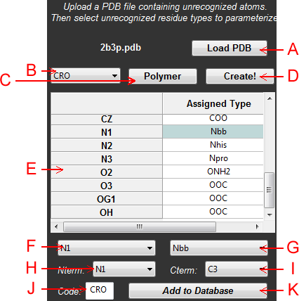

Abstract: The purpose of the residue/ligand creator is to facilitate adding new residue types to Rosetta's parameters database. This will make Rosetta aware of the chemical and physical properties of non-standard residues and ligands. In this example, the GFP chromophore is parameterized.

Figure 1: Schematic of the residue/ligand creator panel
A: Load PDB - Load the PDB file that contains non-standard residues. This file will be scanned, looking for any residues that have not been parameterized for Rosetta at some previous time.
NOTE: If you did not install OpenBabel, instead of seeing a Load PDB button you will see a Load .MOL2 button. Finding/generating MOL2 files for structures can be tedious, so it is recommended that you install OpenBabel so InteractiveROSETTA can generate the MOL2 files from PDB files directly.
B: Unrecognized Type Menu - A menu displaying all of the residues in the PDB file that were not recognized. Select one of them to parameterize it. The structure of this residue will be displayed in PyMOL.
C: Ligand/Polymer - Click this button to toggle between ligands and polymers. Polymers are residues that are embedded in a polypeptide sequence. Ligands are free from the protein chain.
D: Create - Have Rosetta attempt to parameterize the indicated unrecognized type.
E: Parameterization Grid - A grid listing all of the atoms in the unrecognized residue and their corresponding residue types. Initially, the parameterizations are given by Rosetta. If you do not like Rosetta's assignments, you may manually change them.
NOTE: If the residue happens to have multiple atoms with the same atom name, these will be renamed to a unique name. This will cause the PDB file you uploaded to be automatically rewritten to use these new names so that there is no confusion later on when the parameters file is used for that PDB. Also, this process does not create atoms. If there are hydrogen atoms missing from the structure they will not be added at this step. You need to add them yourself before doing the parameterization.
F: Atom Selection - Select atoms out of the menu to edit their parameterization. Alternatively, you may click on the grid directly to select atoms. The selected atom will be given a sphere display in PyMOL so you can easily see where it is in the structure.
G: Parameterization Type - A menu containing all of the available paramterization types for the element of the atom selected in the menu. All of the parameter codes should be self-explanatory.
H: N-terminus - For polymer residues, you need to specify which atom is the N-terminus. It does not need to be a nitrogen atom (although it probably should be if it is embedded in a polypeptide sequence). It just tells Rosetta which atom will be bonded to the C atom of the previous residue.
I: C-terminus - For polymer residues, you need to specify which atom is the C-terminus. It does not need to be a carbon atom (although it probably should be if it is embedded in a polypeptide sequence). It just tells Rosetta which atom will be bonded to the N atom of the next residue.
J: Residue Code - Indicate what the PDB code of this residue will be. It defaults to the value read out of the PDB file. Unless you are planning on changing the code in the PDB file manually you should not change this value. If you have the MOL2 button, you need to specify this value.
K: Add to Database - Click this button to add this residue parameterization to Rosetta's database. The next time you load a structure it should be recognized.
NOTE: If you try to load a structure that is missing too many atoms for these structures, you may crash Rosetta protocols. This could also happen if a single PDB code is used for two different residue types, which may cause unexpected behavior or crash Rosetta. If you need to remove residues from the database, then go to your local Rosetta database and delete the ".params" file for the residue you wish to remove. After doing this, Rosetta will no longer be aware of that residue and you will have to run the Residue/Ligand Creator again to get it back.
Default database locations (assuming that your username is "username"):
Windows: C:\Users\username\InteractiveROSETTA\params
Mac: /Users/username/InteractiveROSETTA/params
Linux: /home/username/InteractiveROSETTA/params